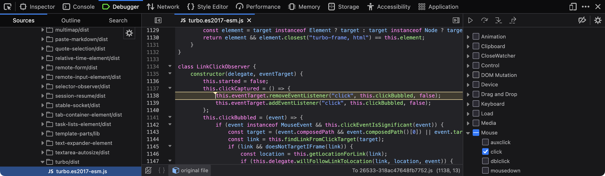

This is going to be a rant about modern web design practices. But before I get to that, let me begin with a familiar principle from the world of cryptography. Among software developers, and especially among those who work on security-sensitive systems, there is a well-known maxim: Don't roll your own crypto. This does not mean that nobody is allowed to write cryptographic code. Someone has to. It means that, for ordinary production software that protects sensitive data of users, we should not rely on a private, unreviewed implementation that has not been vetted by the wider software development community. We should use established, vetted software packages or tools wherever possible.
Fortunately, it is now standard industry practice to avoid rolling your own crypto and instead use cryptographic algorithms and packages that have been peer reviewed and stood the test of time. It wasn't so some twenty years ago. I have seen several flawed home-grown RC4 implementations early in my career, with issues like improper initialisation vectors, predictable keystreams and partial leakage of plaintext into ciphertext, putting sensitive data of users at risk. But today, major e-commerce websites or banks typically do not use home-grown cryptography for its web services. In fact, in regulated domains such as payments, healthcare and personal data processing, doing so could violate requirements for strong cryptography, possibly leading to hefty financial penalties.
Website design is obviously not cryptography. A broken scroll bar is not the same kind of failure as a broken encryption scheme. But I wish there were a similar maxim for website design as well. There are many aspects of websites where, I think, developers should not be rolling their own X, especially when X is something browsers already do well and something users depend on every day. Here I present a list of such X.
Of course, there are valid scenarios where you may need to roll your own X. But here I want to focus on the cases where you should not roll your own X, and how doing so can lead to a worse user experience, at least in my experience. I am not saying that nobody should ever build anything themselves. As someone who does a lot of creative computing myself and develops fun tools from time to time, I am a big proponent of developing your own stuff. But when it comes to developing user interface features for serious websites that people need to use to get their work done, I wish the software development community were more conservative in deciding what fancy feature goes into a website and what is left out. Do keep in mind that I am no expert in user experience. Far from it. So none of what I am saying here should be taken as a recommendation. But I am a user of the Web, and as a user, I have found some modern web design patterns to be frustrating. This post is a lament from one user of the Web, not a design guide.
Of all the things I mentioned above, the one that bothers me the most is custom scroll behaviour on websites. I am used to how page scrolling responds to my mouse, touchpad or keyboard input. When you override the default scrolling behaviour of the web browser with your own implementation, it 'breaks' the page for me. The page now moves too slowly or too quickly when I scroll. Keyboard scrolling may or may not work. You take something I am so familiar with that I don't even think about it, and turn it into something unfamiliar that I now have to think about.
Custom link navigation is another pet peeve of mine. Web browsers can already handle links very well. You could say that this is the whole reason web browsers even exist. Following links is their bread and butter. You shouldn't have to mess with that behaviour at all. If you think you need to, reconsider what you are trying to achieve and whether it is really so important as to disrupt normal link navigation. Let me share an example. When you click on a link on GitHub, say, a file link or an issue link, it triggers a massive piece of functionality implemented in JavaScript that handles the link click for you. To verify this, visit your favourite project on GitHub using Firefox or Chrome, type F12 to open the browser's developer tools, then go to the 'Debugger' or 'Sources' tab, find 'Event Listener Breakpoints' on the right sidebar, expand 'Mouse' and select 'click'. Then click on a link on GitHub and see what happens.

I'm sure I am not the only one who has noticed that, a clicked link sometimes takes too long to load. Ironically, it is often faster to open the link in a new tab than to wait for the JavaScript code to handle the navigation in the current tab.
A custom password input field is another such hazard. Fortunately, custom password input fields have become rarer over the years. The password input field that comes with the web browser is generally well equipped to handle passwords. It can offer to save passwords, fill them in later and generate strong passwords for new accounts. It can also warn when a password is submitted over an insecure HTTP connection, work well with password managers and autofill, and cooperate with mobile keyboards and accessibility tools. If you replace the browser's password field with your own fake version, you may break all of that. You may also end up using an ordinary text field and masking it yourself, in which case the password may be treated by the browser, the operating system or assistive tools as ordinary visible text rather than as a password, thereby exposing the password in ways you did not intend.
Custom date pickers are another common annoyance. I know that
<input type="date"> does not help you select a
date range. But that is okay. You can provide two date input
fields, one for the start date and one for the end date. I am
willing to pay the small price of using two different inputs to
select a date range if that means I can use my favourite web browser
to navigate the calendar and select dates the same way everywhere.
What I am less inclined to do is to learn ten different ways of
using the date selector in ten different implementations across ten
different websites. Right now the implementations of date selector
are all over the place. Some require you to zoom out of the month
view to enter a year view, where you can select years. While you are
there, you cannot change the month again until you return to the
month view. Some require you to click the previous-year button
literally forty times to select your year of birth if you are old
enough. Some do not let you type the date at all. No. I do not
want to learn your calendar widget. I just want to use the date
picker in my favourite browser, which is quite sane. Saner than
your custom implementation. If you need to have a calendar widget
to support browsers with inadequate native date-picker support,
perhaps that support can be added alongside the native date picker
rather than as a replacement for it. For example, the
ordinary <input type="date"> element could be
left intact, with a custom widget provided in addition to
it so that users can manipulate the same field.
In general, just stop messing with the form controls. They almost always introduce new problems while solving some existing ones. And while you are at it, don't keep changing your website layout and interface every few months! I may adapt to the new design, but my ageing relatives cannot. For them, every time you change the user interface, it amounts to learning a whole new tool. If every website keeps doing this every few months, they have to spend a significant amount of time relearning familiar things for no functional benefit. Please just let them enjoy their retirement. Imagine how you would feel if a Linux distribution decided to redesign all its core commands and their command-line options every few months. Or imagine how you would feel if the buttons of your washing machine were rearranged every morning. It wouldn't be pleasant!